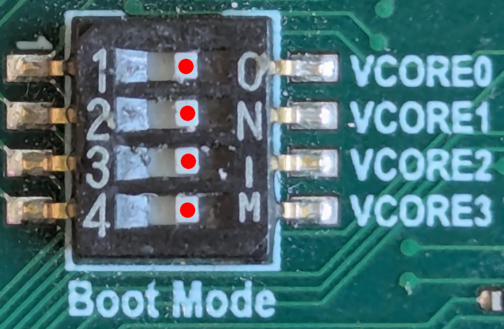

LAN969x Strapping Modes
All EVBs have a 4-way DIP switch which is used to control the boot mode. The location of the DIP switch varies, but it always has a silk print saying "Boot mode".
| The boot mode is only sampled at boot time, which means that when changing the boot mode, the board needs to be reset. |
The following table documents the relevant boot modes used by VelocityDRIVE-SP:
| Strap Value | DIP Setting | LAN969x (A0) |
|---|---|---|
0001 (0x1) |

|
Default development boot mode for VelocityDRIVE-SP |
0100 (0x4) |

|
Default boot mode for VelocityDRIVE-SP |
1010 (0xa) |
De-brick mode. |
|
1011 (0xb) |
De-brick mode (high-speed UART). |
|
1101 (0xd) |
Supported by VelocityDRIVE-SP |
1. Additional Non-VelocityDRIVE-SP Strap Modes
The following modes are defined by the SoC, but are not relevant in a VelocityDRIVE-SP application.
| Strap Value | DIP Setting | LAN969x (A0) |
|---|---|---|
0000 (0x0) |
Not directly supported by VelocityDRIVE-SP |
|
0010 (0x2) |
Not directly supported by VelocityDRIVE-SP |
|
0011 (0x3) |
Not directly supported by VelocityDRIVE-SP |
|
0101 (0x5) |
Not directly supported by VelocityDRIVE-SP |
|
0110 (0x6) |
Not supported / reserved for future use. |
|
0111 (0x7) |
Not supported / reserved for future use. |
|
1000 (0x8) |
Not directly supported by VelocityDRIVE-SP yet |
|
1001 (0x9) |
Not supported / reserved for future use. |
|
1100 (0xc) |
Not supported / reserved for future use. |
|
1110 (0xe) |
Not supported / reserved for future use. |
|
1111 (0xf) |

|
Not supported by VelocityDRIVE-SP |